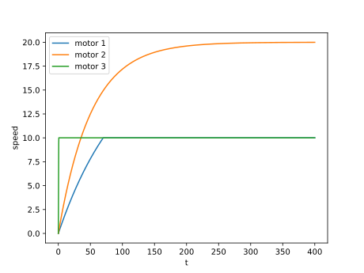

Actuators¶
Motor class¶
-
class
Sandbox.Motor(max_speed: float, motor_inertia_coeff: float = 0, reversed: bool = False, noisemaker: Optional[Sandbox.noise.NoiseSource] = None)[source]¶ A class representing a motor. A motor has a maximum speed at which it will turn in either the forwards or backwards direction. Positive motor speeds results in forwards motion, and negative speeds result in backwards direction. This relationship can be reversed by setting the robot’s
reversedparameter toTrue. A motor can also have inertia, which is the motor’s resistance to changes of speed. If the inertia is set to 0, then the motor can change speed instantaneously. See the figure below for examples of how motors can behave with different combinations of maximum speed and inertia.In the figure, the response of three different motors to a constant command of 20 is shown. Motor 1 has max_speed = 10, motor_inertia_coeff = 100. Motor 2 has max_speed = 40, motor_inertia_coeff = 50. Motor 3 has max_speed = 10, motor_inertia_coeff = 0. Motor 3 changes speed to the commanded valuse in a simgle time step. The speeds of motors 1 and 3 both saturate at their maximum speed value, which is less than the commanded value. The speed of motor 2 changes most slowly, as it has the highest inertia.¶
-
__init__(max_speed: float, motor_inertia_coeff: float = 0, reversed: bool = False, noisemaker: NoiseSource = None)[source]¶ - Parameters
max_speed (float) – The maximum speed the motor can run at. Negative values will be converted to positive ones when they are copied to the motor’s attributes.
motor_inertia_coeff (float) – A parameter used to determine how quickly the motor’s speed can change. Defaults to 0, in which case the motor can change speed instantaneously.
reversed (bool) – A parameter which determines whether the motor runs in the forwards or reverse direction. Defaults to False, in which case the motor runs forwards.
noisemaker (
NoiseSource) – ANoiseSourceobject, to generate noise which is added to the motor’s actual speed.
-
get_data() → Dict[str, Union[List[float], List[bool]]][source]¶ A function to get a motor’s data. Returns the motors histories of speed, motor direction (based on “reversed” variable), and any noise which has been applied to the motor speed.
- Returns
Motor’s data.
- Return type
dict
-
{kind=link}